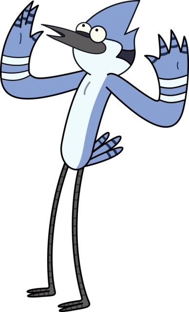
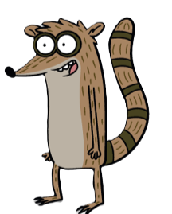

¿Listo para pasar el rato? En este apartado encontrarás la lista completa de personajes de Un Show Más. Descubre todo sobre Mordecai, Rigby y el resto de este equipo de jardinero disfuncional.
Mordecai

Mordecai es un arrendajo azul antropomórfico de 23 años, caracterizado por ser más sensato y maduro que su mejor amigo Rigby, aunque comparte su pereza laboral y gusto por los videojuegos.
Personalidad
Es inteligente, leal y tiende a ser la voz de la razón, aunque a veces cae en la frustración debido a las tonterías de Rigby.
Trabajo
Trabaja como jardinero en un parque local, rol que usa más para pasar el rato y evitar el esfuerzo real.
Relaciones
Pasa la mayor parte de su tiempo con Rigby y experimenta varios romances fallidos a lo largo de la serie, destacando su enamoramiento por Margarita y su relación con CJ.
Dato Curioso
Asistió brevemente a la escuela de arte, pero no terminó sus estudios debido a su bajo talento para hacer retratos.
Rigby

Rigby es un mapache antropomórfico de 23 años,caracterizado por ser inmaduro, impulsivo, extremadamente perezoso y el causante directo de casi todos los problemas caóticos del parque.
Personalidad
Es egoísta, testarudo y tiene la madurez de un niño, pero en el fondo es leal a sus amigos y esconde un gran temor a quedarse atrás o ser abandonado por Mordecai.
Trabajo
Trabaja de mala gana como jardinero en el parque, pasando la mayor parte del tiempo buscando formas de holgazanear, jugar videojuegos o comer comida chatarra.
Relaciones
Su relación principal es con su mejor amigo Mordecai, a quien suele arrastrar a sus locuras. Más adelante en la serie, desarrolla una relación estable y madura con Eileen.
Dato Curioso
A diferencia de Mordecai, Rigby abandonó la escuela secundaria, lo que se convierte en un punto clave de su historia cuando decide regresar de adulto para graduarse.